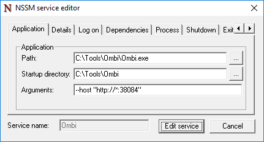

Installation¶
Note: After installing the system, be sure to configure your own systems to handle the requests after approval.
Any requests made without an endpoint to receive it will not be able to be re-processed at this point.
Whatever combination of the supported systems you use is up to you - Sonarr, Radarr, Couchpotato, Lidarr... Whatever.
For a guide on updating, see Update Settings
For considerations when migrating an existing install rather than starting fresh, see Migrating Systems
Recommended install workflow¶
- Install Ombi for your preferred OS using the steps provided below.
If you are migrating systems, rather than starting fresh, stop here and look at Migrating Systems. - Configure your install-specific settings like the application url you'll be using externally.
- Configure external access to Ombi. We strongly recommend using a reverse proxy for a friendly URL and providing SSL.
- Configure notification methods and system connections (Sonarr, Radarr, etc).
Ensure you have systems to handle approved requests before you give users access to the system. - Import users and assign permissions.
Migrating Systems¶
If you're migrating Ombi from an existing install to a new install, the install process itself is exactly the same as below - with one exception, regardless of what you're migrating from or to.
Depending on what database you're using, you will need to keep the following files:
Ombi.dbOmbiExternal.dbOmbiSettings.db
database.json
database.json
When it comes time to actually launch Ombi on your fresh installation, place the relevant files into the new Ombi directory (wherever you may have put it), and then launch Ombi. This way Ombi will load with all of your prior settings, customisations, users, and synced data (so it doesn't require a full re-sync with Plex).
If you are running docker, place these files into the folder you've passed into the container as "/config" for the installation to find them.
Windows¶
- Download the latest
win10-xxx.zip(x64 or x86 depends on your system) from Ombi Releases - Right click the file > Properties > Unblock
- Extract the zip to your preferred directory.
DO NOT place in the "Program Files" or "ProgramData" folders as the Ombi database will be locked. - Run Ombi.exe
- Download the latest
win10-xxx.zip(x64 or x86 depends on your system) from Ombi Releases - Right click the file > Properties > Unblock
- Extract the zip to your preferred directory.
DO NOT place in the "Program Files" or "ProgramData" folders as the Ombi database will be locked. - Run Ombi.exe
Install as a Service¶
(This is the preferred method on Windows)
- Download the latest
win10-xxx.zip(x64 or x86 depends on your system) from Ombi Releases - Right click > Properties > Unblock
- Extract the zip to your preferred directory.
In the example configs below, we've put the contents of the archive intoC:\Tools\Ombi. DO NOT place in the "Program Files" or "ProgramData" folders as the Ombi database will be locked. - Use NSSM to manage Ombi.
(Download either the 32-/64-bit version, extract the archive, then put thenssm.exefile intoC:\Windows\system32.) - Open command prompt as an Administrator, type
nssm install Ombi, then press Enter
Use one of the below settings depending on whether you want to keep or change the default port. - Click "Install service"
- In your command prompt window, type
net start Ombiand press Enter - Wait 10-20 seconds for Ombi to start up, then open a web browser.
- Ombi should now be reachable at http://localhost:5000.
Be sure to adjust directories to your Ombi install location
Path: C:\Tools\Ombi\Ombi.exe
Start directory: C:\Tools\Ombi

Be sure to adjust directories to your Ombi install location
Path: C:\Tools\Ombi\Ombi.exe
Start directory: C:\Tools\Ombi
Arguments: --host "http://*:PORTNUMBER"

Install as a scheduled task¶
As an alternative to NSSM, you can use Task Scheduler to run Ombi.exe as if you were double clicking it and running it like a regular executable, except it's hidden from the task bar and can only be closed by the Task Manager or the Task Scheduler.
- Open 'Task Scheduler' either search for it in start. Or simply Run... Win+R
%windir%\system32\taskschd.msc - Click
Create task...on the right hand side. - Give the task a name. Example: Ombi And a description if you want. (Not necessary)
- Check
Run with highest privileges - Click
Run whether user is logged on or notto ensure Ombi runs even when you are logged out! - Check
Hidden - Configure for: Choose your Windows version.
- Click the
TriggersTab and clickNew... Begin the task:'At system startup.ClickOK`- Click the
ActionsTab and ClickNew... - Click
Browse...and navigate to yourOmbi.exeClickOpen - Fill
Start in (optional):withOmbi.exe's working directory. IE:C:\Ombi\orC:\SERVERS\Ombi\basically, wherever you extracted your 'Ombi' folder to and where it lives. ClickOK Settings TabUn-tickStop the task if it runs longer than:ClickOK- You will be prompted for your windows user name and password. Please enter your credentials and click
OK - Click
Task Scheduler Libraryright click on your new task and hit run. give it a good 20-30 seconds to start. Ombi should now be reachable at http://localhost:5000 !
Note: The next time you restart your PC, Task Scheduler will run ombi for you.
Scheduled task (with pictures)¶
Windows Firewall¶
To allow a port through Windows Firewall, you have a few options.
Note that this is not the preferred method of access, and a Reverse Proxy is recommended instead.
Replace the port in the below commands with your own port if you're running a different port than the default.
Linux systems¶
Debian / APT repo¶
Note: We are looking for a new apt repo maintainer. The apt repo is currently very outdated, as the team member who maintained it has had to adjust his focus.
Note 2: This was the easy way, and only works with Debian-based distributions.
Also note that only systemd is supported, not upstart. That means Debian jessie and up, and Ubuntu 15.04 and up.
Note 3: Apt-Key has been deprecated in Ubuntu 21.xx onwards. Use the v4 (21.xx) method below for this OS.
- Add the apt repository to the apt sources list:
echo "deb https://apt.ombi.app/develop jessie main" | sudo tee /etc/apt/sources.list.d/ombi.list - This repo is signed. This means packages get validated before installation. So, to safely download and install Ombi packages, the Ombi key needs to be installed:
curl -sSL https://apt.ombi.app/pub.key | sudo apt-key add - - Update the package list and install Ombi:
sudo apt update && sudo apt install ombi
Note that this is the 'slow' ring. Fixes and features get pushed to V4 (Develop) much more rapidly than Stable.
1. Add the apt repository to the apt sources list:
echo "deb https://apt.ombi.app/master jessie main" | sudo tee /etc/apt/sources.list.d/ombi.list
2. This repo is signed. This means packages get validated before installation. So, to safely download and install Ombi packages, the Ombi key needs to be installed:
curl -sSL https://apt.ombi.app/pub.key | sudo apt-key add -
3. Update the package list and install Ombi:
sudo apt update && sudo apt install ombi
Note that this is for Ubuntu 20.xx onwards, and on the development branch, __and__ on the new repo.
1. Add the apt repository to the apt sources list:
echo "deb [arch=amd64 signed-by=/usr/share/keyrings/ombi-archive-keyring.gpg] https://packagecloud.io/Ombi-app/Ombi/debian/ jessie main" | sudo tee /etc/apt/sources.list.d/ombi.list
echo "deb-src [arch=amd64 signed-by=/usr/share/keyrings/ombi-archive-keyring.gpg] https://packagecloud.io/Ombi-app/Ombi/debian/ jessie main" | sudo tee -a /etc/apt/sources.list.d/ombi.list
sudo curl -sSL https://packagecloud.io/Ombi-app/Ombi/gpgkey | gpg --dearmor > /usr/share/keyrings/ombi-archive-keyring.gpg3. Update the package list and install Ombi:
sudo apt update && sudo apt install ombi
Note that this is for Ubuntu 20.xx onwards, and on the development branch, __and__ on the new repo.
1. Add the apt repository to the apt sources list:
echo "deb [arch=amd64 signed-by=/usr/share/keyrings/ombi-archive-keyring.gpg] https://packagecloud.io/Ombi-app/Ombi-Dev/debian/ jessie main" | sudo tee /etc/apt/sources.list.d/ombi.list
echo "deb-src [arch=amd64 signed-by=/usr/share/keyrings/ombi-archive-keyring.gpg] https://packagecloud.io/Ombi-app/Ombi-Dev/debian/ jessie main" | sudo tee -a /etc/apt/sources.list.d/ombi.list
sudo curl -sSL https://packagecloud.io/Ombi-app/Ombi-Dev/gpgkey | gpg --dearmor > /usr/share/keyrings/ombi-archive-keyring.gpg3. Update the package list and install Ombi:
sudo apt update && sudo apt install ombi
- Add the apt repository to the apt sources list:
echo "deb [arch=amd64,armhf,arm64] http://repo.ombi.turd.me/stable/ jessie main" | sudo tee "/etc/apt/sources.list.d/ombi.list" - This repo is signed. This means packages get validated before installation. So, to safely download and install Ombi packages, the Ombi key needs to be installed:
wget -qO - https://repo.ombi.turd.me/pubkey.txt | sudo apt-key add - - Update the package list and install Ombi:
sudo apt update && sudo apt install ombi
If no errors are shown, Ombi has been installed successfully and will automatically start during boot.
Ombi should now be reachable on http://your-ip-address:5000. If you would like to change this port, you will need to use the --host startup parameter.
Packages in this repo use systemd.
Use either the systemctl or the service command to start, stop, or restart Ombi.
Fedora 29¶
Deps: compat-openssl10 libcurl-devel libunwind-devel openssl-devel
- Download the latest linux release for your cpu architecture.
- Extract the contents to the desired location (we suggest something like /opt/Ombi/)
cdto the path of the folder (e.g.cd /opt/Ombi)- Execute
./Ombi. Process should load. - Ombi should now be reachable at localhost:5000
macOS¶
- Download the latest osx release
osx-x64.tar.gz - Extract the contents to the desired location (we suggest something like /opt/Ombi/)
- Launch Terminal
cdto the path of the folder (e.g.cd /opt/Ombi)- Execute
./Ombi. Process should load. - Ombi should now be reachable at localhost:5000
Mac Autostart¶
To have Ombi run at startup, add RunAtLoad WorkingDirectory /opt/Ombi to the command.
i.e. /opt/Ombi/Ombi RunAtLoad WorkingDirectory /opt/Ombi
Things to be aware of with macOS¶
MacOS Monterey now uses port 5000 as part of the AirPlay Receiver.
You can either turn off AirPlay Receiver from within the Sharing options menu, or use an alternate port for Ombi.
If you turn off AirPlay you will be unable to use your Mac for receiving audio via AirPlay.
As of macOS Catalina, Apple has strengthened Gatekeeper considerably.
As a result, allowing apps from 'unverified' sources is now a hidden option.
While you could outright disable Gatekeeper and allow all unverified apps to run without prompt, that is a significant hole to punch in your security for one application to work.
Instead, we recommend turning it off for the folder you have Ombi in specifically.
To do this, in Terminal, run
echo yourpassword | sudo -S xattr -r -d com.apple.quarantine /your/path/to/Ombi
(substituting your password and your path to Ombi).
Our preferred deployment method for macOS is still as a Docker container, as it does not impact security on the host OS in the same way.
Docker¶
The Ombi team do not currently maintain any Docker containers directly.
However, there are a number of them available, maintained by various members of the community.
linuxserver.io keep their image the most up-to-date, and they have pretty comprehensive instructions for installation. See the page for their image here.
If you are considering running Ombi in a container, and are unfamiliar with how Docker works, please see Things to consider with Docker to (hopefully) help clear up some things with how networking and access works with a Docker system.
See also Updating for a suggested way to have your docker container be kept up to date automatically.
Helm¶
The Ombi team does not currently maintain a helm chart directly.
A popular helm chart is maintained by the guys over at k8s@home.
Installation, upgrade, and removal docs are all on the artifacthub.io page